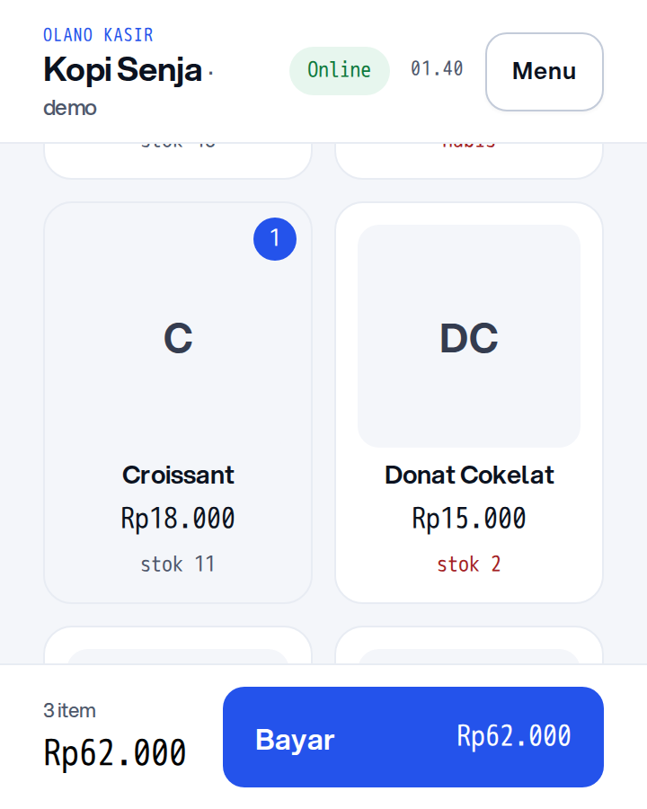
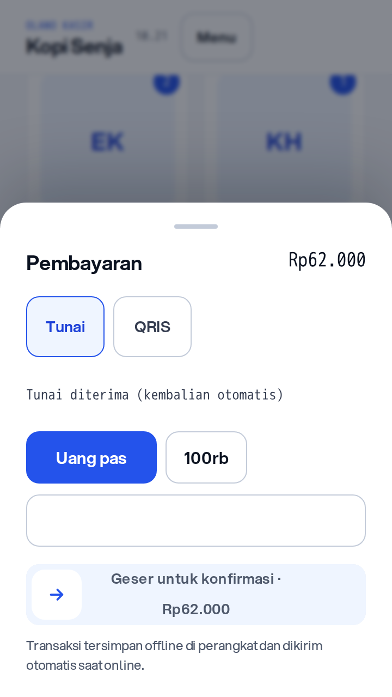
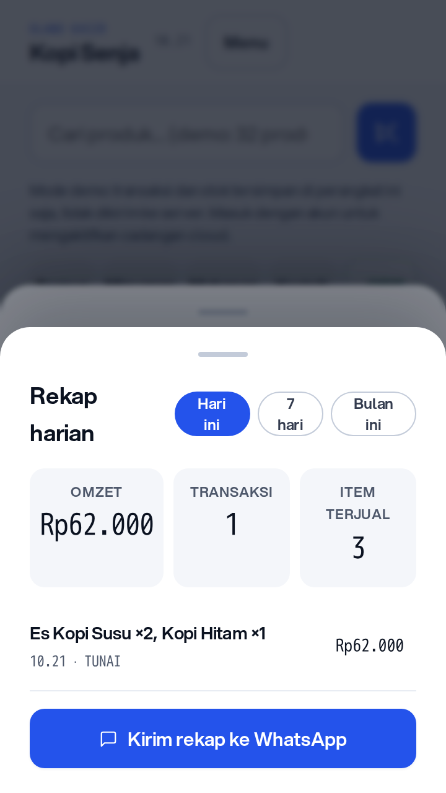

Apa pun bisnis Anda butuhkan, kami urus.
Kasir gratis yang tetap jalan saat internet mati. Pembukuan dan pajak ikut tercatat.
Atau lihat semua layanan. Kasir dan QRIS gratis selamanya.
Yang kami urus
Enam pekerjaan yang biasanya makan waktu Anda.
Ambil yang Anda butuhkan sekarang, tambah sisanya saat usaha tumbuh. Semua memakai data yang sama, jadi tidak ada input dobel.
Setiap transaksi tercatat. Gratis.
Jalan tanpa internet. Nominal QRIS terisi otomatis.
GratisTahu untung, bukan cuma omzet.
Rekap otomatis dari transaksi, siap dibaca akuntan.
Mulai Rp600rbPajak bulan ini, siapa urus?
Dihitung, disisihkan, dan dilaporkan tim kami.
Mulai Rp600rbUntung di GrabFood dan GoFood
Audit GrabFood dan GoFood, perbaikan menu dan promo.
10% omzetWebsite atas nama brand Anda
Toko online dengan brand sendiri, katalog sinkron kasir.
Mulai Rp500rbKerja berulang, jalan sendiri
Pesanan ke printer, rekap harian ke WhatsApp, AI cek untung.
Tahap ujiButuh yang lain? Ceritakan ke kami.
Kalau belum ada di daftar, kemungkinan tetap bisa kami kerjakan.
Tanya duluBelum tahu mulai dari mana? Hitung pajak dulu, atau tanya lewat WhatsApp.
Produknya
Bukan janji. Ini yang Anda pakai tiap hari.
Tampilan asli dari aplikasi Olano. Kasir yang jalan tanpa internet, QRIS yang terisi sendiri, dan rekap yang siap dibaca.



Tanpa daftar. Langsung jalan di browser.
Harga
Mulai gratis. Bayar saat butuh lebih.
Harga layanan tim dihitung terpisah dari paket aplikasi karena porsinya berbeda tiap usaha. Konsultasi awal gratis.
Buktikan sendiri, 60 detik
- 01 Buka kasirnya Tanpa daftar, tanpa pasang aplikasi. Langsung jalan di browser.
- 02 Matikan internet Kasir tetap mencatat transaksi. Datanya tersimpan di perangkat.
- 03 Tutup kasir, buka rekap Omzet, untung, dan pajak bulan ini sudah terhitung sendiri.
Kalau salah satu langkah gagal, itu bug. Laporkan ke kami dan kami perbaiki.
Mulai dari satu transaksi hari ini.
Buka kasir, catat penjualan pertama, lihat rekapnya. Tanpa pasang aplikasi.
Buka kasir gratis